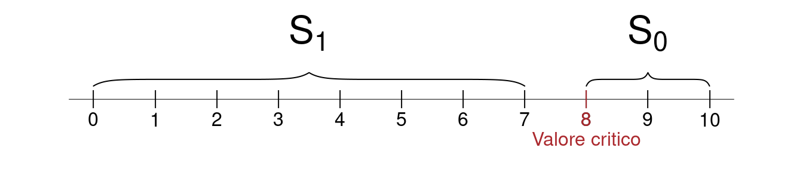
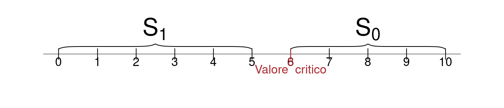
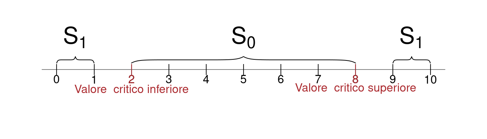
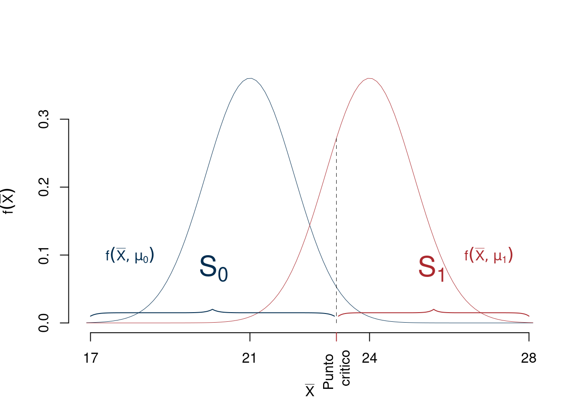
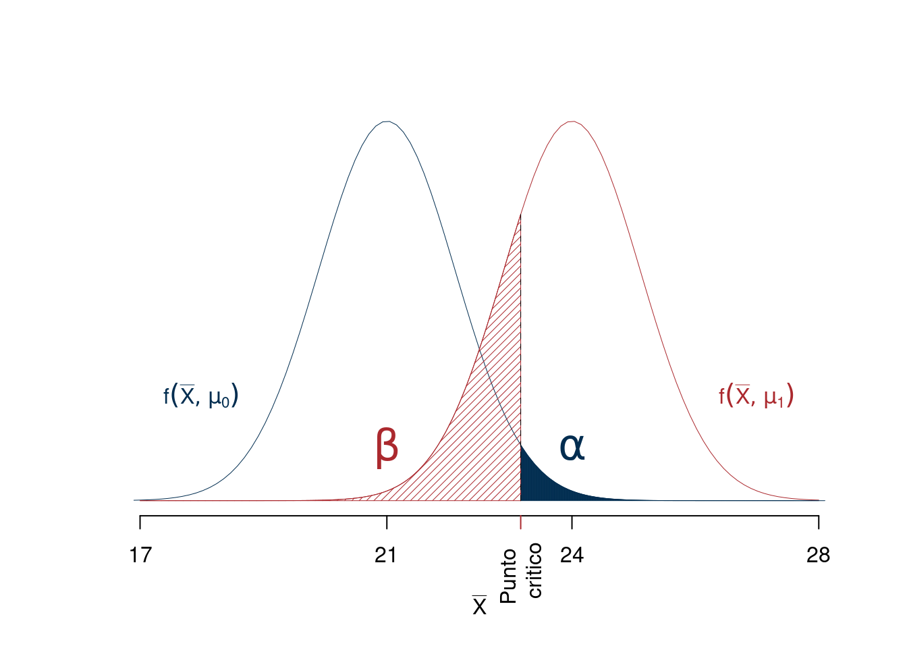

Capitolo 14 Teoria dei test
14.1 Le Ipotesi
Siano \(X_1,...,X_n\) \(n\) VC, replicazioni di \(X\sim\mathscr{L}(\theta)\)
Un Test Statistico è la scelta tra due ipotesi diverse su \(\theta\) alla luce dei dati che osserveremo: \[\begin{cases} H_0:\theta\in\Theta_0, \qquad \Theta_0\subset\Theta\\ H_1:\theta\in\Theta_1, \qquad \Theta_1\subset\Theta\\ \end{cases} \]
- Se \(\Theta_0=\{\theta_0\}\) è un solo punto si dice che \(H_0\) è un’ipotesi semplice, altrimenti è composta
- Se \(\Theta_1=\{\theta_1\}\) è un solo punto si dice che \(H_1\) è un’ipotesi semplice, altrimenti è composta
14.1.1 Esempi di ipotesi
Esempio: siamo indecisi se l’urna da cui stiamo per estrarre le palline abbia l’80% di palline vincenti oppure il 40%: \[\begin{cases} H_0:\pi=0.8, \\ H_1:\pi=0.4 \end{cases} \]
In questo caso, \(H_0\) è un’ipotesi semplice (specifica solo un punto) e un’ipotesi \(H_1\) è semplice serve solo per comprendere la teoria. i primi esempi saranno svolti con due ipotesi semplici.
Esempio: siamo indecisi se il reddito medio degli italiani, di cui stiamo per estrarre un campione, sia uguale a 18 mila € annui oppure minore di 18 mila € annui: \[\begin{cases} H_0:\mu=18, \\ H_1:\mu< 18 \end{cases} \]
In questo caso, \(H_0\) è un’ipotesi semplice (specifica solo un punto) e \(H_1\) è composta (specifica un’intera regione di \(\Theta\)) è il caso più interessante nella pratica ed è il caso che svilupperemo maggiormente.
Esempio: siamo indecisi se la SD del reddito degli italiani sia maggiore o minore di 2 mila € annui: \[\begin{cases} H_0:\sigma\geq 2, \\ H_1:\sigma<2 \end{cases} \]
In questo caso, \(H_0\) è un’ipotesi composta e \(H_1\) è composta è un caso meno interessante e non svilupperemo
14.2 La Decisione
Preparare un test statistico significa dividere lo spazio dei campioni in due \[\mathcal{S}=\mathcal{S}_0\cup\mathcal{S}_1,\qquad \mathcal{S}_0\cap\mathcal{S}_1=\emptyset \]
Il test è una decisione: se il campione proverrà da \(\mathcal{S}_0\) il test deciderà per \(H_0\), se il campione proverrà da \(\mathcal{S}_1\) il test deciderà per \(H_1\).
Ogni decisione ha delle conseguenze
- Se \(H_0\) è vera ma il campione cade in \(\mathcal{S}_1\) sceglierò \(H_1\) erroneamente
- Se \(H_1\) è vera ma il campione cade in \(\mathcal{S}_0\) sceglierò \(H_0\) erroneamente
14.3 La tavola della verità
La tavola della verità è una tabella simbolica in cui sulle righe viene scritto il vero stato di natura cioè, se \(H_0\) è vera o falsa. Per colonna viene scritta la decisione, cioè se scelgo di tenere \(H_0\) o di rifiutarla in favore di \(H_1\).
| decido \(H_0\) | decido \(H_1\) | ||
|---|---|---|---|
| stato di natura | \(H_0\) | Corretta | Errore I tipo |
| stato di natura | \(H_1\) | Errore II tipo | Corretta |
Dunque:
Definizione 14.1 (Errori di primo e secondo tipo) Si definiscono
- L’errore di primo tipo è l’errore che si commette scegliendo \(H_1\) quando è vera \(H_0\).
- L’errore di secondo tipo è l’errore che si commette scegliendo \(H_0\) quando è vera \(H_1\).
Dunque ad ogni decisione corrisponde un possibile errore. Per valutare un test si devono calcolare le probabilità di errore
| decido \(H_0\) | decido \(H_1\) | ||
|---|---|---|---|
| stato di natura | \(H_0\) | \(1-\alpha\) | \(\alpha\) |
| stato di natura | \(H_1\) | \(\beta\) | \(1-\beta\) |
Dove
Definizione 14.2 (Probabilità degli Errori di primo e secondo tipo) \[\alpha=P(\text{Errore I tipo})=P(\text{Decidere $H_1$};H_0)=P(X_1,...,X_n\in\mathcal{S}_1;H_0)\]
\[\beta=P(\text{Errore II tipo})=P(\text{Decidere $H_0$};H_1)=P(X_1,...,X_n\in\mathcal{S}_0;H_1)\]
\(\alpha\) è il livello di significatività del test, \(\alpha\) è la probabilità di scegliere \(H_1\) quando invece è vera \(H_0\). \(\beta\) è la probabilità di scegliere \(H_0\) quando invece è vera \(H_1\).
Infine
Definizione 14.3 (Potenza di un Test) \[1-\beta =P(\text{Decidere $H_1$}; H_1)=P(X_1,...,X_n\in\mathcal{S}_1;H_1)\] \(1-\beta\) è la potenza del test, \(1-\beta\) è la probabilità di scegliere \(H_1\) quando \(H_1\) è vera.
Esempio 14.1 (Spam e Filtri email) Il Un filtro delle email che separa lo spam dal non spam non è una procedura certa \[\begin{align*} P(\text{Falso Positivo}) =& P(\text{filtrata spam} ; \text{non è spam})= \alpha \\ P(\text{Falso Negativo}) =& P(\text{filtrata non spam} ; \text{è spam})= \beta \\ \end{align*}\]
La tavola della verità
| Non Spam | Spam | ||
|---|---|---|---|
| stato di natura | Non Spam | \(1-\alpha\) | \(\alpha\) |
| stato di natura | Spam | \(\beta\) | \(1-\beta\) |
Obiettivo: costruire il filtro in modo tale che \(\alpha\) sia fissato ad un valore arbitrariamente piccolo \(1-\beta\) sia la più alta possibile, per \(\alpha\) fissato
14.4 Esempio: Scegliere tra due ipotesi semplici
Esempio: siamo indecisi se l’urna da cui stiamo per estrarre le palline abbia l’80% di palline vincenti oppure il 40%: \[\begin{cases} H_0:\pi=0.8, \\ H_1:\pi=0.4 \end{cases} \]
Decidiamo di estrarre 10 palline CR (IID), \(X_1,...,X_{10}\) per decidere tra \(H_0\) e \(H_1\). Prima di estrarre le palline possiamo calcolare la probabilità di tutti i possibili campioni sotto ipotesi \(H_0\) e sotto ipotesi \(H_1\). La somma \[S_{10}=X_1+...+X_{10}\] descrive tutti i possibili campioni Bernoulli IID di ampiezza \(n=10\), \(S_{10}\sim\text{Binom}(\pi)\) e quindi \[\mathcal{S}=\{0,~1,~2,...,10\}\] e \[P(S_{10}=s;\pi)=\binom{10}{s}\pi^s(1-\pi)^{n-s},\qquad \pi\in\{0.8,0.4\}\]
Possiamo quindi calcolare
| \(S_n\) | 0 | 1 | 2 | 3 | 4 | 5 | 6 | 7 | 8 | 9 | 10 |
| \(P(S_n;\pi=0.8)\) | 0.0000 | 0.0000 | 0.0001 | 0.0008 | 0.0055 | 0.0264 | 0.0881 | 0.2013 | 0.3020 | 0.2684 | 0.1074 |
| \(P(S_n;\pi=0.4)\) | 0.0060 | 0.0403 | 0.1209 | 0.2150 | 0.2508 | 0.2007 | 0.1115 | 0.0425 | 0.0106 | 0.0016 | 0.0001 |
14.4.1 Tre diversi Test a confronto
Sia dato il sistema di ipotesi: \[\begin{cases} H_0:\pi=0.8, \\ H_1:\pi=0.4 \end{cases} \]
Un test è una divisione dello spazio dei campioni, e nel modello Bernoulli IID i campioni di ampiezza \(n=10\) sono riassunti dalla loro somma \(S_{10}\)
Decisione A Se \(S_{10}/10\geq 0.8\Rightarrow S_{10}\geq 8\) allora scelgo \(H_0\); se \(S_{10}/10 < 0.8\Rightarrow S_{10}< 8\) allora scelgo \(H_1\)

Decisione B Se \(S_{10}/10\geq 0.6\Rightarrow S_{10}\geq 6\) allora scelgo \(H_0\); se \(S_{10}/10 < 0.6\Rightarrow S_{10}< 6\) allora scelgo \(H_1\)

Decisione C Se \(0.2\leq S_{10}/10\leq 0.8\Rightarrow 2\leq S_{10}\leq 8\) allora scelgo \(H_0\); se \(S_{10}/10 < 0.2\) oppure \(S_{10}>0.8\), \(\Rightarrow S_{10}< 2\) oppure \(S_{10}>8\) allora scelgo \(H_1\)

14.4.2 Gli errori della decisione A
Siccome sappiamo calcolare la distribuzione di \(S_{10}\) sotto \(H_0\) e sotto \(H_1\):
| \(S_n\) | 0 | 1 | 2 | 3 | 4 | 5 | 6 | 7 | 8 | 9 | 10 |
| \(P(S_n;\pi=0.8)\) | 0.0000 | 0.0000 | 0.0001 | 0.0008 | 0.0055 | 0.0264 | 0.0881 | 0.2013 | 0.3020 | 0.2684 | 0.1074 |
| \(P(S_n;\pi=0.4)\) | 0.0060 | 0.0403 | 0.1209 | 0.2150 | 0.2508 | 0.2007 | 0.1115 | 0.0425 | 0.0106 | 0.0016 | 0.0001 |
Decisione A: \(\mathcal{S}_0=\{S_{10}\geq 8\}\) e \(\mathcal{S}_1=\{S_{10}< 8\}\)
\[\begin{eqnarray*} \alpha &=& P(\mathcal{S}_{1};H_0)=P(S_{10}=0~\cup S_{10}=1~\cup...\cup~ S_{10}=7)\\ &=&0+0+0+0.001+0.006+0.026+0.088+0.201=0.3222\\ \beta &=& P(\mathcal{S}_{0};H_1)=P(S_{10}=8~\cup S_{10}=9~\cup~ S_{10}=10)\\ &=&0.011+0.002+0=0.0123 \end{eqnarray*}\]
La significatività del test A è \(\alpha=0.3222\). La potenza del test A è \(1-\beta=0.9877\)
| \(H_0\) | \(H_1\) | ||
|---|---|---|---|
| stato di natura | \(\pi=0.8\) | 0.6778 | 0.3222 |
| stato di natura | \(\pi=0.4\) | 0.0123 | 0.9877 |
14.4.3 Gli errori della decisione B
Siccome sappiamo calcolare la distribuzione di \(S_{10}\) sotto \(H_0\) e sotto \(H_1\):| \(S_n\) | 0 | 1 | 2 | 3 | 4 | 5 | 6 | 7 | 8 | 9 | 10 |
| \(P(S_n;\pi=0.8)\) | 0.0000 | 0.0000 | 0.0001 | 0.0008 | 0.0055 | 0.0264 | 0.0881 | 0.2013 | 0.3020 | 0.2684 | 0.1074 |
| \(P(S_n;\pi=0.4)\) | 0.0060 | 0.0403 | 0.1209 | 0.2150 | 0.2508 | 0.2007 | 0.1115 | 0.0425 | 0.0106 | 0.0016 | 0.0001 |
Decisione B: \(\mathcal{S}_0=\{S_{10}\geq 6\}\) e \(\mathcal{S}_1=\{S_{10}< 6\}\) \[\begin{eqnarray*} \alpha &=&P(\mathcal{S}_{1};H_0)=P(S_{10}=0~\cup S_{10}=1~\cup...\cup~ S_{10}=5)\\ &=&0+0+0+0.001+0.006+0.026=0.0328\\ \beta &=& P(\mathcal{S}_{0};H_1)=P(S_{10}=7~\cup ...\cup~ S_{10}=10)\\ &=& 0.111+0.042+0.011+0.002+0=0.1662 \end{eqnarray*}\]
La significatività del test B è \(\alpha=0.0328\). La potenza del test B è \(1-\beta=0.8338\)
| \(H_0\) | \(H_1\) | ||
|---|---|---|---|
| stato di natura | \(\pi=0.8\) | 0.9672 | 0.0328 |
| stato di natura | \(\pi=0.4\) | 0.1662 | 0.8338 |
14.4.4 Gli errori della decisione C
Siccome sappiamo calcolare la distribuzione di \(S_{10}\) sotto \(H_0\) e sotto \(H_1\):
| \(S_n\) | 0 | 1 | 2 | 3 | 4 | 5 | 6 | 7 | 8 | 9 | 10 |
| \(P(S_n;\pi=0.8)\) | 0.0000 | 0.0000 | 0.0001 | 0.0008 | 0.0055 | 0.0264 | 0.0881 | 0.2013 | 0.3020 | 0.2684 | 0.1074 |
| \(P(S_n;\pi=0.4)\) | 0.0060 | 0.0403 | 0.1209 | 0.2150 | 0.2508 | 0.2007 | 0.1115 | 0.0425 | 0.0106 | 0.0016 | 0.0001 |
Decisione C: \(\mathcal{S}_0=\{2\leq S_{10}\leq 8\}\) e \(\mathcal{S}_1=\{S_{10}< 2\}\cup\{S_{10}>8\}\) \[\begin{eqnarray*} \small\alpha &=&P(\mathcal{S}_{1};H_0)=P(S_{10}= 0~\cup S_{10}=1~\cup~ S_{10}=9~\cup S_{10}=10)\\ &=&0+0+0.268+0.107=0.3758\\ \beta &=& P(\mathcal{S}_{0};H_1)=P(S_{10}=2~\cup ...\cup~ S_{10}=8)\\ &=&0.121+0.215+0.251+0.201+0.111+0.042+0.011=0.952 \end{eqnarray*}\]
La significatività del test C è \(\alpha=0.3758\), la potenza del test C è \(1-\beta=0.048\)
| \(H_0\) | \(H_1\) | ||
|---|---|---|---|
| stato di natura | \(\pi=0.8\) | 0.6242 | 0.3758 |
| stato di natura | \(\pi=0.4\) | 0.9520 | 0.0480 |
14.4.5 Confronto
| \(H_0\) | \(H_1\) | ||
|---|---|---|---|
| stato di natura | \(\pi=0.8\) | 0.6778 | 0.3222 |
| stato di natura | \(\pi=0.4\) | 0.0123 | 0.9877 |
| \(H_0\) | \(H_1\) | ||
|---|---|---|---|
| stato di natura | \(\pi=0.8\) | 0.9672 | 0.0328 |
| stato di natura | \(\pi=0.4\) | 0.1662 | 0.8338 |
| \(H_0\) | \(H_1\) | ||
|---|---|---|---|
| stato di natura | \(\pi=0.8\) | 0.6242 | 0.3758 |
| stato di natura | \(\pi=0.4\) | 0.9520 | 0.0480 |
14.5 Ipotesi Nulla e Ipotesi Alternativa
Nell’approccio decisionista la statistica è di aiuto al decision manager: la decisione tra \(H_0\) e \(H_1\) deve tenero conto dei costi che una decisione sbagliata comporta e pesare i costi con la probabilità di sbagliare per ottenere una valutazione di rischio. Interessante approccio ma non verrà seguito in questo corso.
Nell’approccio falsificazionista (https://it.wikipedia.org/wiki/Principio_di_falsificabilit%C3%A0), la statistica è di aiuto alla conoscenza del mondo esterno e delle sue leggi. Seguiremo questo approccio. In molte discipline \(H_0\) viene chiamata Ipotesi Nulla e ha una particolare interpretazione: \(H_0\) è lo stato di conoscenza pregresso. Rappresenta l’ipotesi che i dati non abbiano aggiunto niente di diverso da ciò che già conoscevamo. Sotto \(H_0\) asserisce che la differenza tra l’evidenza del campione e l’ipotesi nulla è solo dovuta al caso. \(H_1\) è chiamata ipotesi alternativa, sotto \(H_1\) la differenza tra l’evidenza dei dati e \(H_0\) non è dovuta al caso ma ad un fattore sistematico. La maggior parte delle volte l’obiettivo della ricerca si conclude positivamente se \(H_0\) viene rifiutata, e dunque i dati presentati nella ricerca hanno aggiunto conoscenza.
14.6 Rifiutare o non rifiutare \(H_0\)
Quando si prepara test, spesso, si vuole mostrare che i dati campionari smentiscono alcune ipotesi pregresse. \(H_0\) viene abbandonata (rifiutata,confutata) solo se c’è una forte evidenza campionaria contro
- Se \(H_0\) non viene rifiutata allora la differenza tra i dati e l’ipotesi nulla è considerata non significativa
- Se \(H_0\) viene rifiutata allora la differenza tra i dati e l’ipotesi è considerata significativa
Rifiutare \(H_0\) non significa accettare \(H_1\), ma sostituire una ipotesi pregressa \(H_0\) con una nuova supportata dai dati, \(H_1\). \(H_1\) diventa la nuova \(H_0\) e sarà considerata lo stato di conoscenza fino a quando non si troveranno nuovi dati che la confutano. Per preservare \(H_0\) scegliamo una probabilità di significatività bassa \[\alpha=\{0.05,~0.01,~0.005,~0.001\}\]
- \(\alpha=0.05\) produce un test al 5%
- \(\alpha=0.01\) produce un test all’1%
- ecc.
L’obiettivo è trovare, tra tutte i test a livello \(\alpha\) fissato, quello con potenza più alta. Non sempre il test più potente esiste. Non tratteremo il problema del test più potente in maniera sistematica.
14.7 Test per \(\mu\): due ipotesi semplici, \(\sigma^2\) nota
Stiamo per estrarre \(n=10\) VC IID, \(X_1,...,X_{10}\) da una normale \(X\sim N(\mu,\sigma^2)\), di cui conosciamo \(\sigma^2=3.5^2\). Per esempio siamo indecisi tra: \[\begin{cases} H_0:\mu=\mu_0=21 \\ H_1:\mu=\mu_1=24 \end{cases} \]
Siccome \(S_{10}=X_1+...+X_{10}\) racchiude tutta l’informazione sulla media \(\mu\) che possiamo estrarre da un campione di normali IID con varianza nota, possiamo ragionare su \(\hat\mu=S_{10}/10\) invece che su tutto lo spazio dei campioni \(\mathcal{S}\). \[\hat\mu=\frac 1 n \sum_{i=1}^n X_i\sim N\left(\mu,\frac{\sigma^2}{n}=1.1068^2\right)\]
- Sotto \(H_0\) \[\hat\mu\sim N(21,1.1068^2)\]
- Sotto \(H_1\) \[\hat\mu\sim N(24,1.1068^2)\]
14.7.1 Test per \(\mu\): scegliere il punto critico
Una decisione consiste nello scegliere il punto critico sullo spazio delle medie:

Potremmo prendere, per esempio, come punto critico \(\bar x=23\): se la media dei dati è minore di 23 sceglierò \(H_0\) altrimenti sceglierò \(H_1\).
14.7.2 Probabilità di errore di primo e di secondo tipo
Fissato il punto critico, per esempio 23, osserviamo
\[\begin{eqnarray*} \alpha &=& P(\text{Errore I Tipo})\\ &=& P(\text{Scegliere $H_1$ quando è vera $H_0$})\\ &=& P(\bar X>23;H_0)\qquad\text{sotto ipotesi $H_0$: $\mu=21$}\\ &=& 1-P(\bar X \le 23;H_0)\\ &=& 1-P\left(\frac{\bar X-\mu_0}{\sigma/\sqrt{n}}\le \frac{23-21}{3.5/\sqrt{10}}\right)\\ &=& 1-\Phi(1.807)\\ &=& 0.0354\\ \beta &=& P(\text{Errore II Tipo})\\ &=& P(\text{Scegliere $H_0$ quando è vera $H_1$})\\ &=& P(\bar X<23;H_1)\qquad\text{sotto ipotesi $H_1$: $\mu=24$}\\ &=& P(\bar X \le 23;H_1)\\ &=& P\left(\frac{\bar X-\mu_1}{\sigma/\sqrt{n}}\le \frac{23-24}{3.5/\sqrt{10}}\right)\\ &=& \Phi(-0.9035)\\ &=& 0.1831 \end{eqnarray*}\]
Graficamente osserviamo.

14.7.3 Test per \(\alpha\) fissato, \(\alpha=0.05\)
Scegliere il punto critico in questo modo è molto arbitrario e si preferisce scegliere \(\alpha\). Il valore della probabilità di primo tipo viene scelto basso preservare \(H_0\) e rifiutarla solo se l’evidenza campionaria è molto a favore di \(H_1\). Fissiamo un valore di \(\alpha\) abbastanza piccolo, per esempio, \(\alpha=0.05\). Trovare il punto critico per \(\alpha\) fissato significa risolvere il seguente problema inverso \[P(\hat\mu>\text{Punto Critico};H_0)=0.05\]
Sotto \(H_0\) \[\frac{\hat\mu-\mu_0}{\sigma/\sqrt n}=\frac{\hat\mu-21}{3.5/\sqrt{10}}=\frac{\hat\mu-21}{1.1068}\sim N(0,1)\]
Problema inverso lo trasferiamo su \(Z\), per esempio, e trovo il punto critico \[\begin{eqnarray*} P(Z>z_{0.05}) &=& 0.05 \\ z_{0.05} &=& 1.6449 \qquad \text{letto dalle tavole}\\ P(Z>1.6449) &=& 0.05 \\ P\left(\frac{\hat\mu-21}{1.1068}>1.6449\right)&=&0.05\\ P\left(\hat\mu>21+1.6449\cdot1.1068\right)&=&0.05\\ P\left(\hat\mu>22.8205\right)&=&0.05\\ \text{Punto Critico} &=& \mu_0+z_{0.05}\frac{\sigma}{\sqrt{n}} \\ &=& 22.8205 \end{eqnarray*}\]
14.7.4 La regola di decisione, \(\alpha=0.05\)
- Se risulterà \(\hat\mu\leq 22.8205\) allora decideremo di non rifiutare \(H_0\)
- Se risulterà \(\hat\mu>22.8205\) allora decideremo di rifiutare \(H_0\)
La significatività di questo test è al 5%: \[\alpha=0.05=P(\hat\mu>22.8205;H_0)\]
Per calcolare \(\beta\) dobbiamo calcolare \[\begin{eqnarray*} \beta &=& P(\hat\mu<22.8205;H_1) \\ &=& P\left(\frac{\hat\mu-\mu_1}{\sigma/\sqrt n}<\frac{22.8205-24}{1.1068}\right)\\ &=& P\left(Z<1.6449+\frac{21-24}{1.1068}\right)\\ &=&P(Z<-1.0657)\\ &=&\Phi(-1.0657)\\ &=&0.1433 \end{eqnarray*}\]
La potenza del test è 85.6714% \[1-\beta=0.8567\]
14.7.5 Test per \(\alpha\) fissato, \(\alpha=0.01\)
Fissiamo un valore di \(\alpha\) abbastanza piccolo, per esempio, \(\alpha=0.01\). Trovare il punto critico per \(\alpha\) fissato significa risolvere il seguente problema inverso \[P(\hat\mu>\text{Punto Critico};H_0)=0.01\]
Sotto \(H_0\) \[\frac{\hat\mu-\mu_0}{\sigma/\sqrt n}=\frac{\hat\mu-21}{3.5/\sqrt{10}}=\frac{\hat\mu-21}{1.1068}\sim N(0,1)\]
Problema inverso lo trasferiamo su \(Z\), per esempio, e trovo il punto critico \[\begin{eqnarray*} P(Z>z_{0.01}) &=& 0.01 \\ z_{0.01} &=& 2.3263 \qquad \text{letto dalle tavole}\\ P(Z>2.3263) &=& 0.01 \\ P\left(\frac{\hat\mu-21}{1.1068}>2.3263\right)&=&0.01\\ P\left(\hat\mu>21+2.3263\cdot1.1068\right)&=&0.01\\ \text{Punto Critico} &=& \mu_0+z_{0.01}\frac{\sigma}{\sqrt{n}} \\ &=& 23.5748 \end{eqnarray*}\]
14.7.6 La regola di decisione, \(\alpha=0.01\)
- Se risulterà \(\hat\mu\leq 23.5748\) allora decideremo di non rifiutare \(H_0\).
- Se risulterà \(\hat\mu>23.5748\) allora decideremo di rifiutare \(H_0\).
La significatività di questo test è all’1%: \[\alpha=0.01=P(\hat\mu>23.5748;H_0)\]
Per calcolare \(\beta\) dobbiamo calcolare \[\begin{eqnarray*} \beta &=& P(\hat\mu<23.5748;H_1) \\ &=& P\left(\frac{\hat\mu-\mu_1}{\sigma/\sqrt n}<\frac{23.5748-24}{1.1068}\right)\\ &=& P\left(Z<2.3263+\frac{21-24}{1.1068}\right)\\ &=&P(Z<-0.3842)\\ &=&\Phi(-0.3842)\\ &=&0.3504 \end{eqnarray*}\]
La potenza del test è 64.9576% \[1-\beta=0.6496\]
14.8 \(H_0\) semplice e \(H_1\) composta
Nella pratica più comune, se \(\theta\) è il parametro da testare, analizzeremo i tre seguenti sistemi di ipotesi
Unilaterale destra \[\begin{cases} H_0:\theta=\theta_0\\ H_1:\theta>\theta_0 \end{cases}\]
Unilaterale sinistra \[\begin{cases} H_0:\theta=\theta_0\\ H_1:\theta<\theta_0 \end{cases}\]
Bilaterale \[\begin{cases} H_0:\theta=\theta_0\\ H_1:\theta\neq \theta_0 \end{cases}\]
14.9 La Statistica Test
La Statistica Test è una statistica (una funzione dei dati) che agevola il processo decisionale. Consente di non dover trovare il punto critico nello spazio di \(\mathcal{S}\). Calcolata sul campione osservato consente di decidere immediatamente se il campione porta più evidenza ad \(H_0\) oppure ad \(H_1\).
Se \(\hat\theta\) è stimatore per \(\theta\), con errore di stima \(SE(\hat\theta)\), una pratica comune è la statistica test \[T=\frac{\hat\theta-\theta_0}{SE(\hat\theta)}\] come misura di allontanamento da \(H_0\)
- se \(\hat\theta=\theta_0\), allora \(T=0\)
- se \(\hat\theta>\theta_0\), allora \(T>0\)
- se \(\hat\theta<\theta_0\), allora \(T<0\)
Se l’errore di stima \(SE(\hat\theta)\) è grande, allora piccole differenze tra \(\hat\theta\) e \(\theta_0\) non comportano a grandi variazioni di \(T\) intorno a zero.
Se l’errore di stima \(SE(\hat\theta)\) è piccolo, allora piccole differenze tra \(\hat\theta\) e \(\theta_0\) comportano grandi variazioni di \(T\) intorno a zero.
Trovare il punto critico sullo spazio di \(\mathcal{S}\) equivale a trovalo su \(T\).